大刀洗飛行場は、現在の朝倉市・筑前町・三井郡にまたがる広大な土地に建設された陸軍の飛行場だ。建設前は一面の雑木林だったこの地に、飛行場の完成とともに人々が集まり始めた。商店、旅館、工場——活気あふれる「軍都」が生まれていった。
飛行場を支えたのは鉄道網だった。稲倉鉄道・中央軌道・国鉄甘木線が整備され、全国から兵士・軍属・工員が運ばれてきた。飛行場の正門近くには「新町商店街」と「営門前商店街」が形成され、にぎわいを見せた。
戦跡訪問記 ／ PEACE MEMORIAL MUSEUM
福岡県朝倉市 ― 飛行場が伝える、あの戦争の記憶
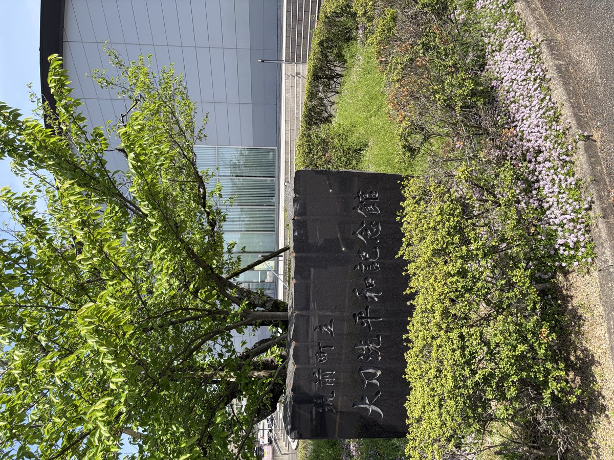
福岡県朝倉市に、かつて帝国陸軍の巨大な飛行場があった。「大刀洗飛行場」——ここは日本の若者たちが空へと旅立ち、そして多くが二度と還らなかった場所だ。飛行場跡地に建てられた大刀洗平和記念館は、爆撃・特攻・少年兵・市民生活など、太平洋戦争のあらゆる断面を今に伝えている。展示のパネルや遺品・実物機を通じて見えてきた「あの戦争」を、写真とともに振り返る。
大刀洗飛行場は、現在の朝倉市・筑前町・三井郡にまたがる広大な土地に建設された陸軍の飛行場だ。建設前は一面の雑木林だったこの地に、飛行場の完成とともに人々が集まり始めた。商店、旅館、工場——活気あふれる「軍都」が生まれていった。
飛行場を支えたのは鉄道網だった。稲倉鉄道・中央軌道・国鉄甘木線が整備され、全国から兵士・軍属・工員が運ばれてきた。飛行場の正門近くには「新町商店街」と「営門前商店街」が形成され、にぎわいを見せた。
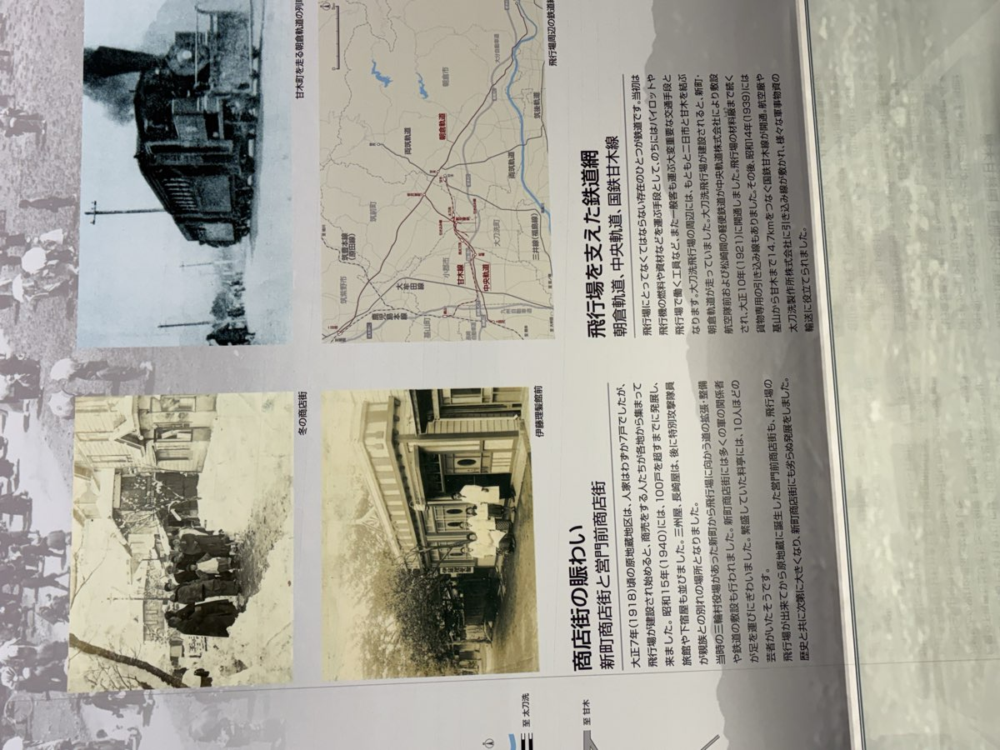
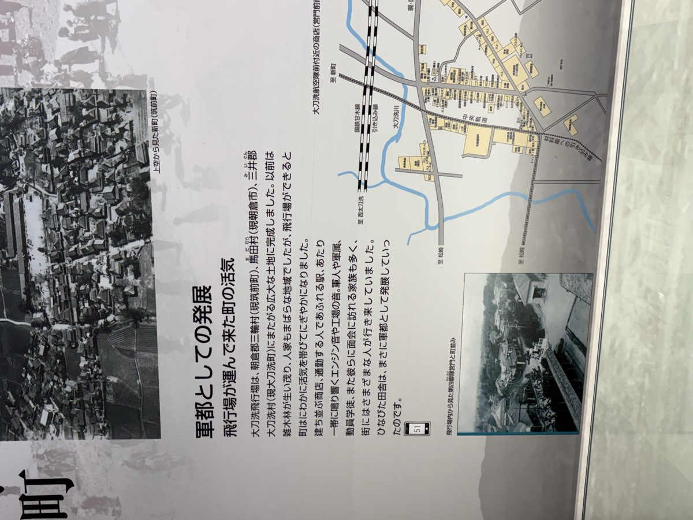
昭和20年（1945）3月27日、大刀洗飛行場に空襲が迫った。米軍第XXI爆撃司令部（XXI BOM. COM.）が送り込んだB-29の大編隊が、この飛行場を「TARGET 1236」として直撃した。
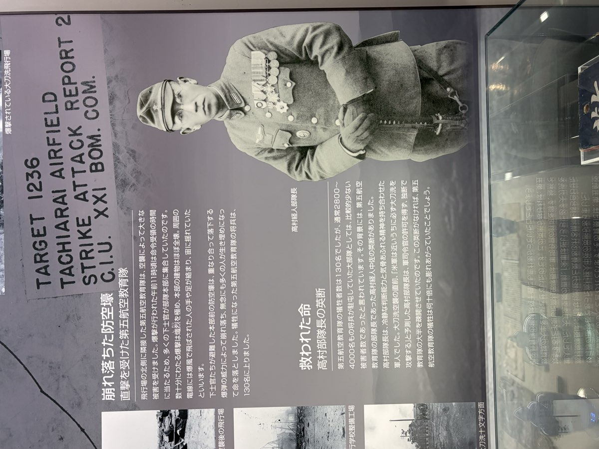
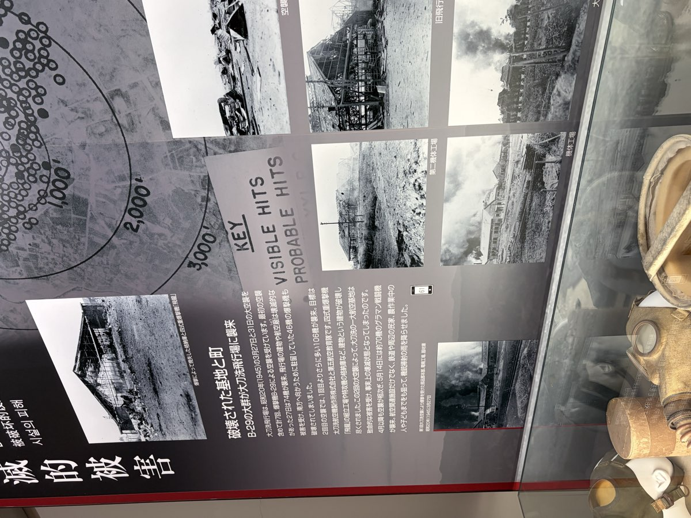
| 実施日 | 昭和20年（1945）3月27日・5月5日 |
|---|---|
| 攻撃部隊 | 米第XXI爆撃司令部 B-29編隊 |
| 駐留兵員 | 約2,800〜4,000名 |
| 死者数 | 約130名 |
| 備考 | 高村部隊長の的確な指示により多数の命が救われた |
空襲警報とともに飛行場の防空壕に逃げ込んだ兵士たち。しかし校舎や整備施設は次々と爆撃に飲み込まれた。駐留兵員の命中率（死者率）は約3〜5%にとどまったが、周辺の町や疎開先の学校教育施設にも甚大な被害が及んだ。
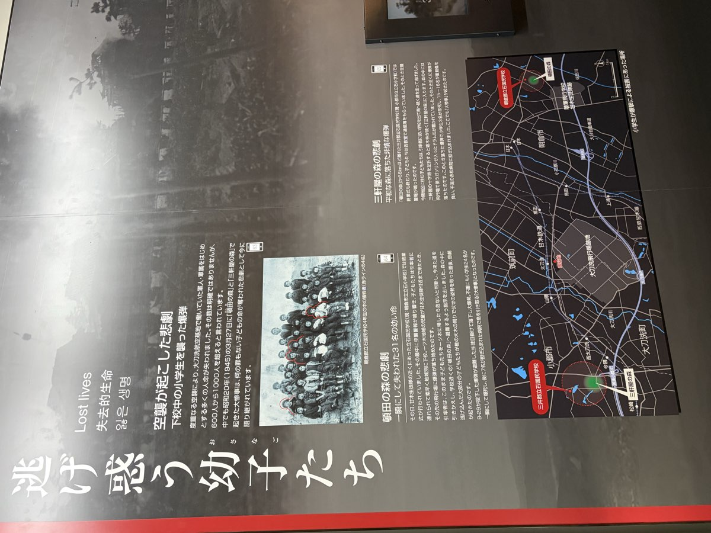
爆撃がもたらしたのは、兵士だけの犠牲ではなかった。飛行場周辺には、都市部から疎開してきた多くの子どもたちが暮らしていた。
昭和20年3月27日の空襲では、飛行場近くに疎開していた子どもたちが巻き込まれた。額田地区では31名の小学生が命を落とした。親元を離れ、疎開先で平和な日を過ごしていた子どもたちが、突然の爆撃に命を奪われたのだ。
三井屋周辺でも、同じく疎開中の子どもたちが犠牲となった。爆弾は兵器だけを狙わない——そのことを、この地の悲劇は静かに語り続けている。
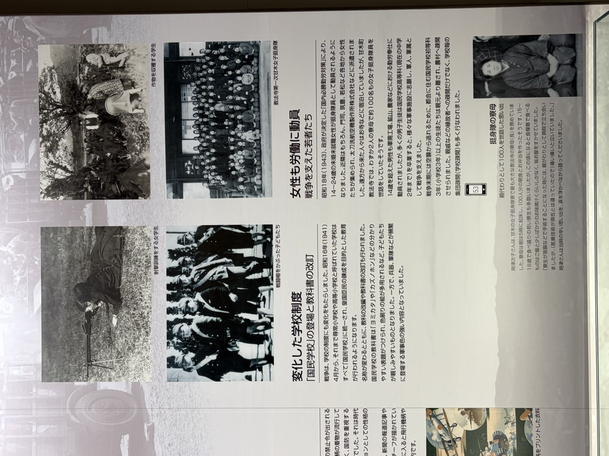
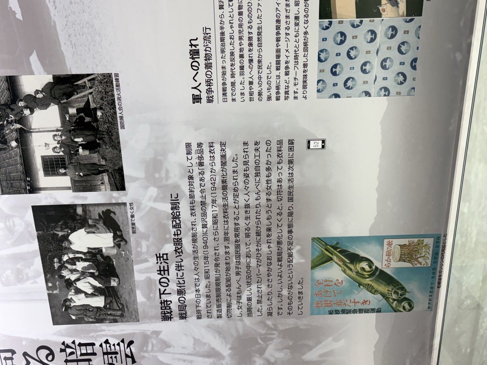
昭和16年（1941）、小学校は「国民学校」に改称された。教科書の内容は軍国主義色に塗り替えられ、授業にはカズマヤカーゲーなどの軍事的な遊びが取り入れられた。子どもたちは幼いころから「お国のために」という価値観の中で育てられた。
昭和18年（1943）、政府は「国内必勝勤労対策」を決定。14〜24歳の未婚女性が「挺身隊員」として飛行機工場・農家・鉱山など各地の職場に動員された。近隣からも約100名の女子挺身隊員が大刀洗周辺に集められたという。
昭和17年（1942）から衣料品は切符制・配給制となった。生活は日を追うごとに苦しくなったが、一方で戦場や戦闘機をモチーフにした「戦争柄の着物」が流行するという、戦時ならではの光景もあった。
農村部の人手不足を補うため、若い女性教師・女学生が「駐在婦」として地方の農家に派遣された。現代からは想像しにくいが、当時の日本では若い女性が見知らぬ土地で農家の仕事を担う光景が日常となっていた。
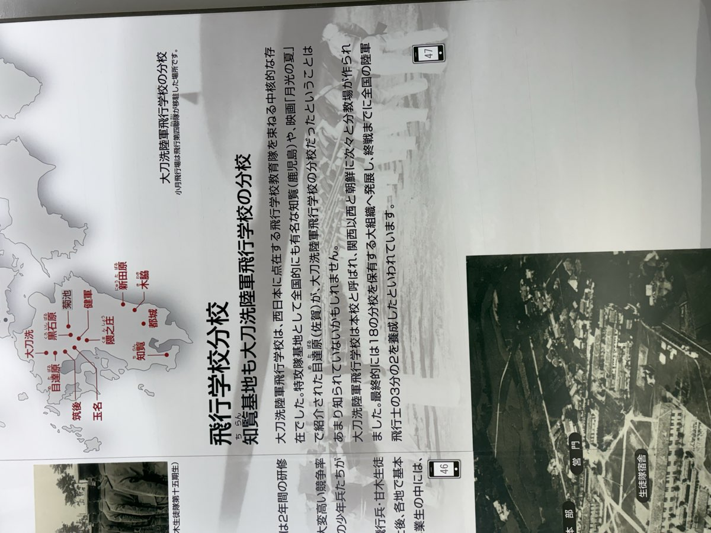
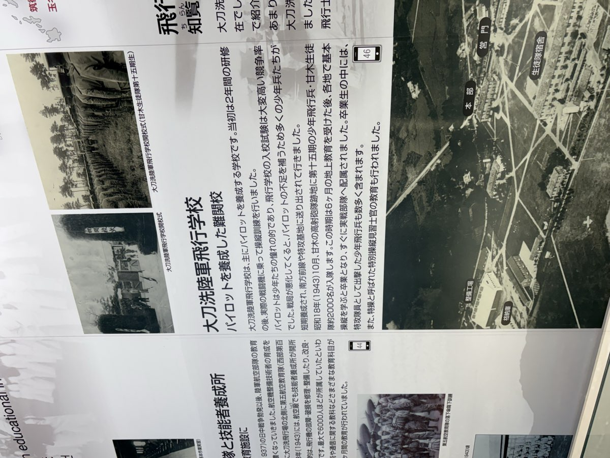
大刀洗陸軍飛行学校は、日本の航空兵力の中核を担う特校隊基地だった。知覧（鹿児島）・佐賀など全国に有名な訓練基地が存在する中、大刀洗はその本校として機能し、全国18か所の分校を統括した。終戦までに日本の飛行士の3分の2を養成したといわれる。
昭和18年（1943）10月、2,000名以上が大刀洗飛行場に入学した。受験競争率は大変高く、14〜18歳の少年たちが「お国のため」に志願した。わずか数か月〜2年の訓練を経て、多くが特攻要員として前線へ配置された。
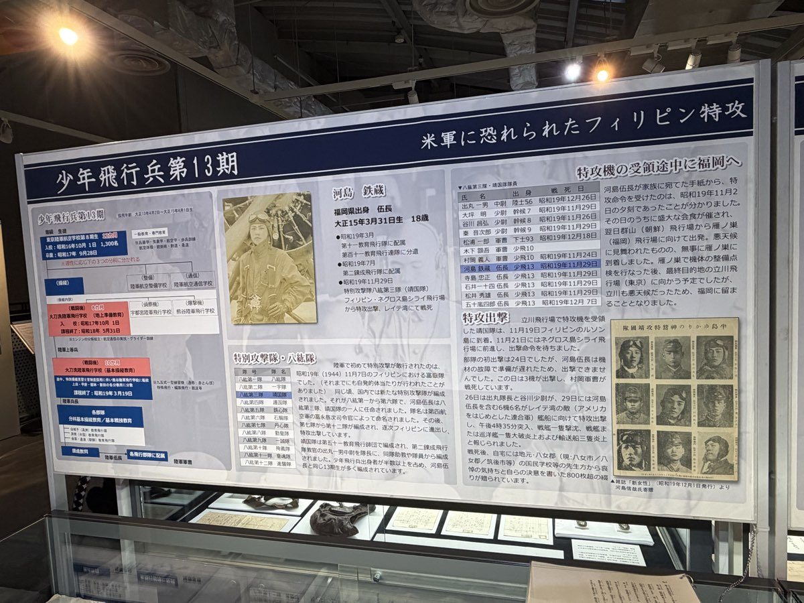
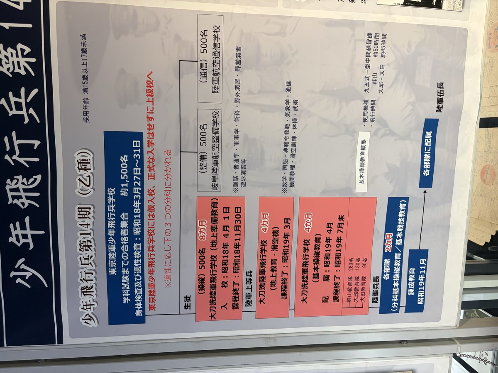
| 合格者数 | 約1,500名 |
|---|---|
| 内訳 | 操縦 500名 ／ 整備 500名 ／ 通信 500名 |
| 訓練場所 | 大刀洗陸軍飛行学校（地上教育・滑空機） |
| 訓練期間 | 地上教育 4か月 ／ 基本操縦教育 4か月 |
| 配属後 | 各部隊へ配置、分科基本業務・基本戦技教育（2か月） |
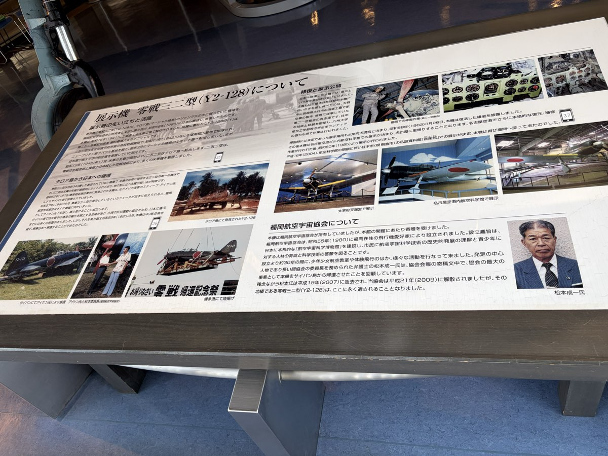
館内に永久展示されている零戦三二型（Y2-128）は、太平洋の島・パラオで発見された機体だ。昭和55年（1980）に福岡航空宇宙協会が設立され、本機の帰還と修復に向けた活動が始まった。昭和60年（1985）、機体はサイパンを経て日本に帰還。本格的な復元・修復が行われ、現在は当館に永久展示されている。
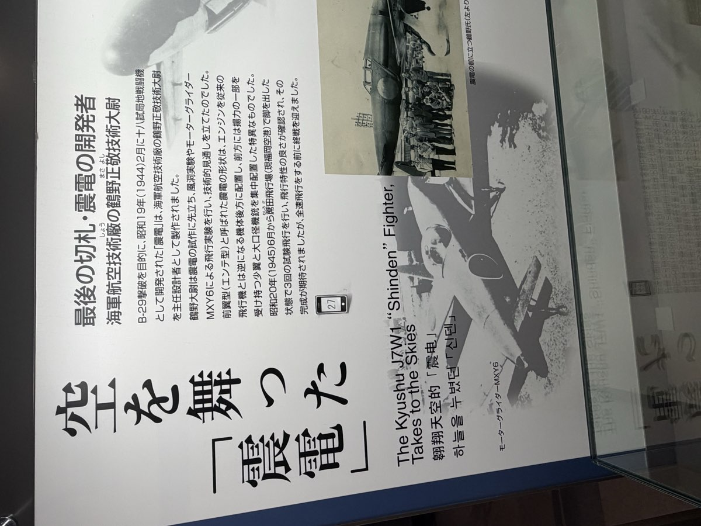
B-29迎撃のために開発された局地戦闘機「震電（J7W1）」は、海軍航空技術廠の鶴野正敬技術大尉が主任設計者として製作した。前翼型の独特な機体形状と強力なエンジンを持ち、昭和20年（1945）6月から試験飛行を開始。しかし3回の試験飛行を経ただけで終戦を迎え、量産化には至らなかった。
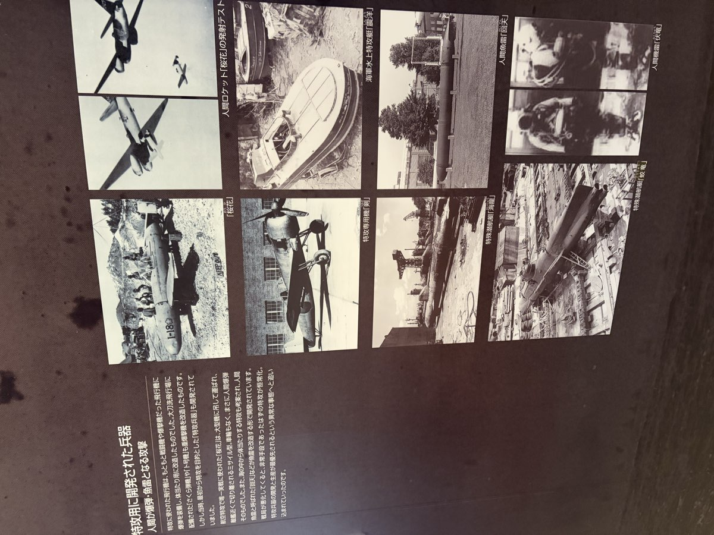
特攻——それは、人間が搭乗した航空機や魚雷、ボートそのものを爆弾として敵艦に体当たりさせる作戦だった。「特攻は兵器ではなく、人間が兵器になる攻撃」と展示は伝える。
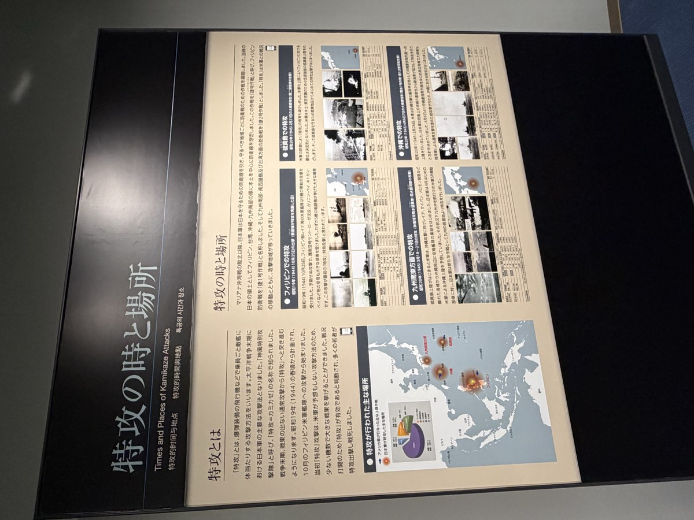
| 戦域 | 時期 | 特徴 |
|---|---|---|
| フィリピン | 1944年10月〜 | 最初の組織的特攻 |
| 九州南西方面 | 1945年初め | 台湾沖・東シナ海方面 |
| 沖縄 | 1945年4〜6月 | 最大規模の特攻作戦 |
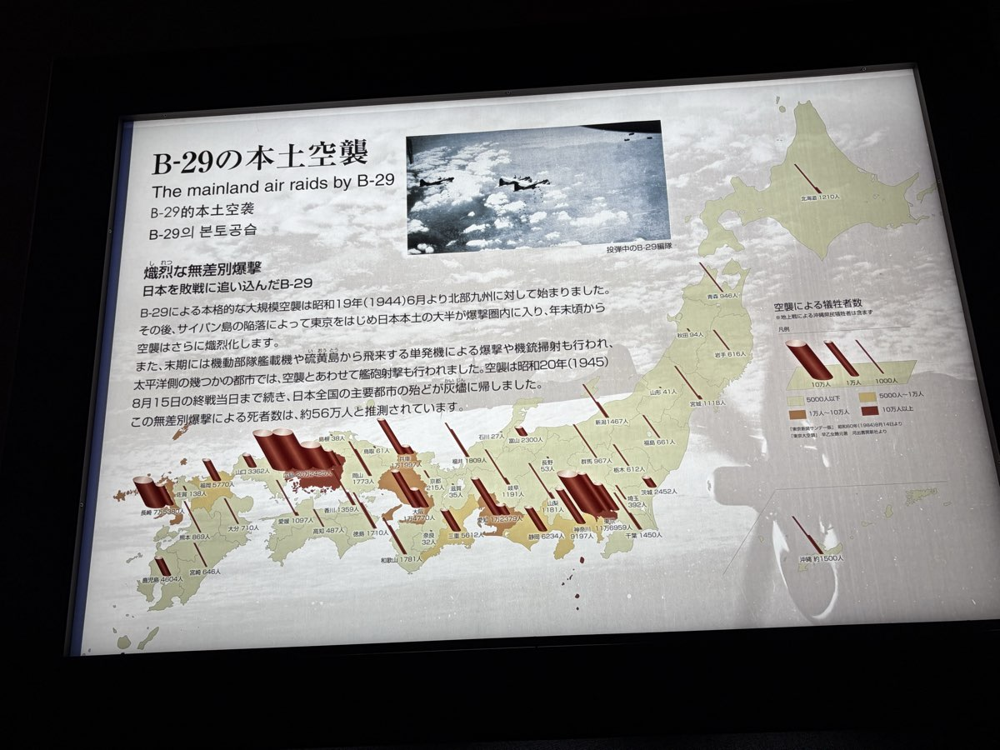
| 総出撃機数 | 陸海軍合計 約2,550機 |
|---|---|
| 命中率 | 約16%（単機あたり） |
| 日本側戦死者 | 約4,000名 |
| 米側被害 | 多数の艦船が沈没・損傷。フランクリン等では1隻で800人以上が死亡 |
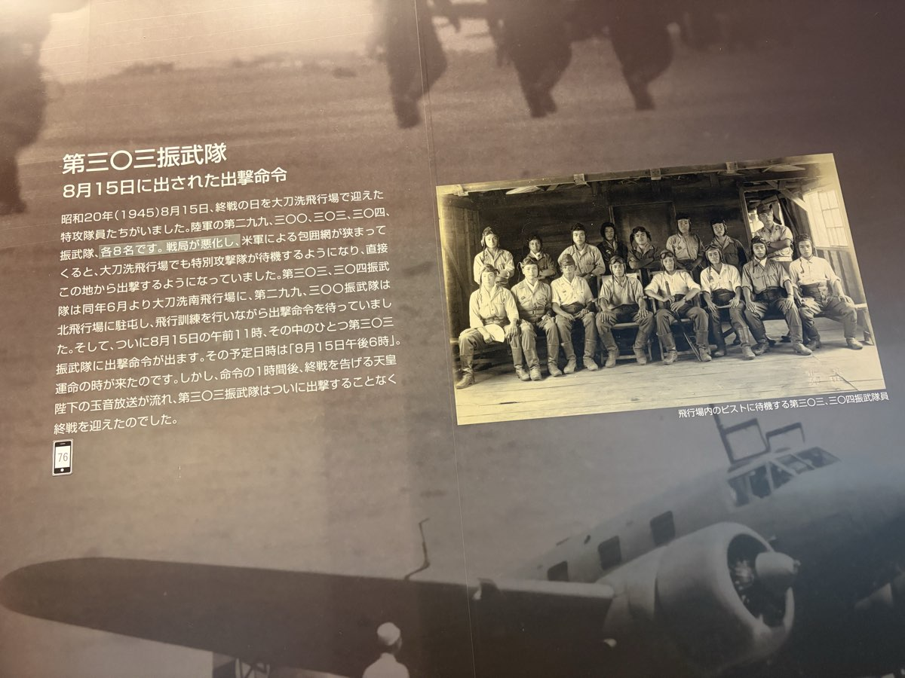
昭和20年（1945）8月15日——終戦の日、大刀洗飛行場には特攻を待つ若者たちがいた。
陸軍の第二九九・三〇〇・三〇三・三〇四振武隊、各8名が同飛行場で待機していた。戦局が悪化するにつれ米軍の包囲網は狭まり、大刀洗飛行場でも特別攻撃隊がこの地から直接出撃するようになっていた。第三〇三振武隊は同年6月より大刀洗南飛行場に駐屯し、飛行訓練を行いながら出撃命令を待ち続けていた。
ついに8月15日の午前11時、第二九九・三〇〇振武隊に出撃命令が下った。出撃予定日時は「8月15日午後6時」——しかし命令のわずか1時間後、天皇陛下の玉音放送が流れ、終戦が告げられた。第三〇三振武隊はついに出撃することなく、終戦を迎えたのだった。
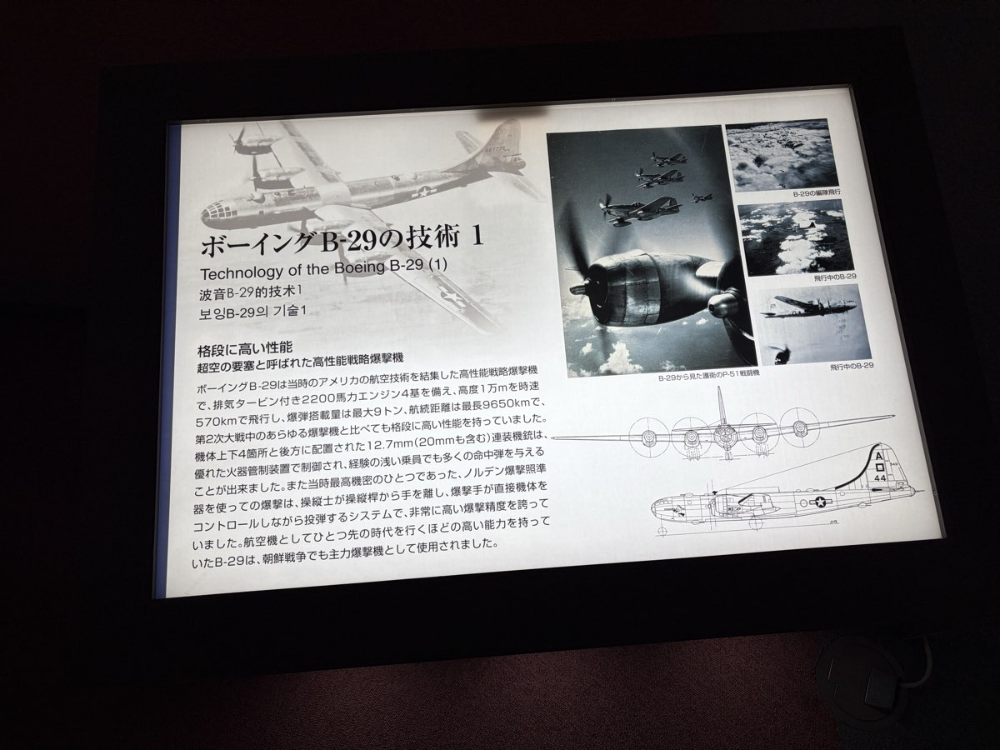
| 最高速度 | 570 km/h |
|---|---|
| 実用上昇限度 | 約10,000 m |
| 航続距離 | 9,650 km |
| 爆弾搭載量 | 最大9トン |
| エンジン | 排気タービン付き2,200馬力×4基 |
| 武装 | 12.7mm機銃（20mm含む）×多数 |
B-29による本土への大規模空襲は昭和19年（1944）6月、北部九州への攻撃から始まった。サイパン島の陥落後は東京をはじめ日本本土の大半が爆撃圏内に入り、空襲はさらに激化。昭和20年8月15日の終戦日まで続いた。無差別爆撃による全国の死者は約56万人と推測されている。
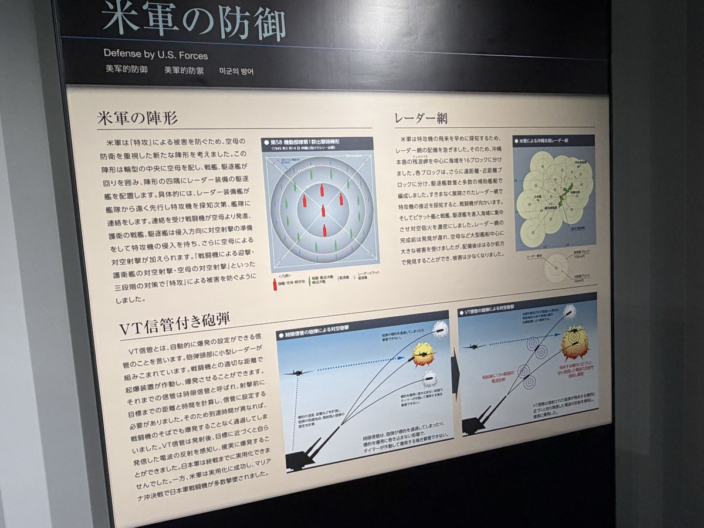
米軍は特攻機の来襲に対し、沖縄周辺を16のブロックに分けたレーダー網を構築。「レーダー探知 → 戦闘機迎撃 → 対空砲火」という三段階の防御体制を敷いた。さらにVT信管（近接信管）を搭載した砲弾は、目標に接近すると自動で爆発する画期的な技術で、多くの特攻機を撃墜した。
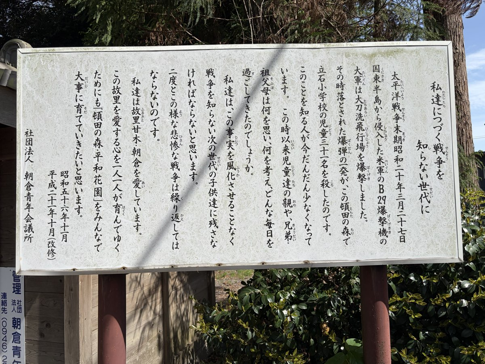
太平洋戦争末期 昭和20年3月27日、国軍平島から大刀洗飛行場に来たB-29爆撃機の大軍は大刀洗飛行場の近くの森で小学生三十名を殺した。この時を生きた大人の人が今だんだん少なくなっていきます。小学生の我たちは父母・兄弟でこの悲惨な出来事を考え、もう二度とこのような悲しい戦争は繰り返してはならないと思います。私達には次の世代の子供達に戦争を文化させることなく、祖父母の語った事を思い、以来児童達の自由・発展の毎日をすごしていきたいと思います。
— 朝倉青年会議所
館外には、爆撃で犠牲になった子どもたちゆかりの「槻田の森」が今も残されている。市民の手で大切に守り続けられるこの森は、戦争の記憶を次の世代へと伝える生きた証だ。
展示を巡り終えたとき、印象に残るのは単なる「歴史の事実」ではない。数字の裏にある一人ひとりの人生——志を持って空に挑んだ少年飛行兵、爆撃から命を守ろうとした隊長、疎開先で空襲に倒れた子どもたち、出撃命令を待ちながら終戦を迎えた特攻隊員。大刀洗平和記念館は、その一つひとつの命の重さを、今日も静かに伝え続けている。
| 所在地 | 福岡県朝倉郡筑前町依田76-1 |
|---|---|
| アクセス | 甘木鉄道 大刀洗駅より徒歩約15分 |
| 主な展示 | 零戦三二型（実物）・震電模型・特攻関連資料・爆撃記録など |